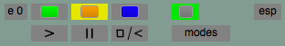
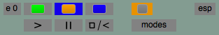
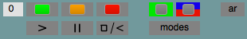
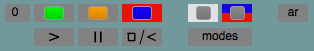
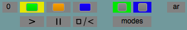
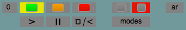
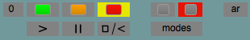

VarGui slider / player gui to set envir variables and synth controllers and play synths, event patterns and tasks
Part of: miSCellaneous
Inherits from: Object
SC setups may contain discrete and continuous control, e.g. using combinations of Pbinds, Tasks and Synths. There are many possible ways of interaction between such elements, sometimes there is the alternative to control things by server or language (e.g. Pbinds versus Demand Ugens) but often one needs to have both. VarGui is a multi purpose slider and player GUI, originally intended for indentifying parameters to be reused in other setups.
Pbinds and Tasks can easily refer to environmental variables - in case of Pbinds e.g. via Pfunc, Plazy, Pcollect, but more conveniently via the dynamic scope PLx suite - so VarGui can control environmental variables and synth controllers. For basic principles of using event patterns with functional code and the related scoping features see Event patterns and Functions. VarGui was not intended for performance, however (since miSCellaneous v0.4) it includes a player section. Players can be used in different (reset) modes, states of synths and streams are reflected by colors, it also works with wslib slider classes (Example 8). For quick GUI generation using SynthDef metadata for controlspecs and / or automatic Pbind builds see VarGui shortcut builds. As both VarGui help files are quite full of details, a more general overview, including some exercises, is given in Introduction to miSCellaneous.
See also: VarGui shortcut builds, Introduction to miSCellaneous, PLx suite, Event patterns and LFOs, Event patterns and Functions, Buffer Granulation, Live Granulation, HS with VarGui
Some Important Issues Regarding VarGui
VarGui allows to choose SynthDefs or Synths, Events patterns or EventStreamPlayers and Task functions or Tasks as input. It is recommended to take the more general objects (SynthDefs, Event patterns, Task functions) as then derived Synths, EventStreamPlayers and Tasks are newly generated and the latter are run in newly generated Environments. If you follow this it is very unlikely to accidentally break gui representation of data (though it's not strict MVC paradigm).
On the other hand there are special cases when you might want to pass Synth objects / synth nodes, Tasks or EventStreamPlayers directly (e.g. HS with VarGui). Then a bit more care has to be taken as, although a VarGui instance doesn't allow to poll more than one GUI window from it, nothing prevents you from refering to identical Synth objects / synth nodes, Tasks, EventsStreamPlayers or environmental variables with different VarGui instances. This is not recommended as, obviously, a possible source of confusion.
If you are passing a Synth directly and moreover its SynthDef is not known to SynthDescLib setting a single component of an arrayed control also causes setting of all components below (no other choice at the moment, however, a very special case).
GUI specific:
With miSCellaneous v0.16 (March 2017) backwards compatibility with Cocoa and SwingOSC is no longer supported, now cross-platform Qt is standard. VarGui was originally written with Cocoa as reference, though restrcitions on Qt are minor.
1) With Qt mouseDown is the hardcoded mode of player action, which anyway could be regarded as standard usage.
2) Moving several sliders in parallel (see Example 1c) works on all platforms and with wslib sliders.
3) Combined slider movement with modifier keys differs in the necessary order of key pressing and mouse clicking.
In Qt you can (and with the Cmd modifier involved you have to) press thereafter.
4) With EZSlider you can jump to a certain slider position by clicking at an arbitrary position in the slider field.
With wslib sliders you can choose modes \jump and \move (Example 8).
5) Combined synth / stream player button actions with Caps-lock are currently not working with Qt.
You can list styles by
GUI.availableStyles
and set with
GUI.style = \myFavoriteStyle
Creation / Class Methods
*new (varCtr, synthCtr, stream, synth, clock, quant, varEnvirGroups, envir, synthCtrGroups, assumePlaying, assumeRunning, assumeEnded, server)
Create a new VarGui object, which holds control specifications.
varCtr - specPairs or a collection of specPairs, where
specPairs is a collection of the form [ key, spec, ... ] where
key is the symbol of the environmental variable to be set and
spec must be one of those:
(a) Collection of the form [ minval, maxval, warp, step, default ],
defining the corresponding ControlSpec, or a collection of specs of this form
for an arrayed control if the environmental variable should have the value
of a collection itself. step is used for the derivation of slider step size.
(b) Symbol refering to a ControlSpec globally stored in Spec.specs
or a collection thereof for arrayed control.
ControlSpec.step is used for the derivation of slider step size.
(c) SimpleNumber for a dummy slider with fixed value.
If specPairs or single components of a collection of specPairs are nil and the corresponding
stream arg is a Symbol or String pointing to a SynthDef, it will be tried to derive
controls from corresponding SynthDef metadata resp. global ControlSpecs
(see VarGui shortcut builds).
Variables are set in environments that are either given implicitely (1) or explicitely (2):
(1) by eventstream players / tasks passed to stream - they are already bound to an
environment - or newly generated together with eventstream players or tasks from
patterns or functions passed to stream.
(2) by envir. This allows setting of variables in Environments in case of absent stream players.
From explicit or implicit envir input an ordered collection of non-identical environments is derived,
which, without one of the above infos, will consist of currentEnvironment only.
If varCtr is already grouped as a collection of specPairs then variables from i-th specPairs will be set
in the i-th environment of the derived collection.
If varCtr is given as a flat collection and specPairs contains no multiple keys then variables are set
in the first resp. only environment in question.
If varCtr is given as a flat collection and specPairs contains multiple keys then varEnvirGroups
is needed to map variables to environments (Example 5a).
Note that the i-th environment means the i-th non-identical environment, not necessarily
(in the case of environments implicitely given by eventstream players / tasks) the environment
of the i-th stream.
Defaults to nil.
synthCtr - specPairs or a collection of specPairs, where
specPairs may be nil or a collection of the form [ key, spec, ... ] where
key is the symbol of the control arg to be set and
spec must be one of those:
(a) Collection of the form [ minval, maxval, warp, step, default ],
defining the corresponding ControlSpec, or a collection of specs of this form
for an arrayed control. step is used for the derivation of slider step size.
(b) Symbol refering to a ControlSpec globally stored in Spec.specs
or a collection thereof for arrayed control.
ControlSpec.step is used for the derivation of slider step size.
(c) SimpleNumber for a dummy slider with fixed value.
If specPairs or single components of a collection of specPairs are nil, it will be tried to
derive controls from SynthDef metadata resp. global ControlSpecs (see VarGui shortcut builds).
If synthCtr is already grouped as a collection of specPairs then controls from i-th specPairs will be used
for setting the i-th synth.
If synthCtr is given as a flat collection and specPairs contains no multiple keys then controls will be used
for setting the only synth in question.
If synthCtr is given as a flat collection and specPairs contains multiple keys then synthCtrGroups
is needed to map synth controls to synths (Example 5b).
Defaults to nil.
stream - Expects Pattern, EventStreamPlayer, Function, Task or a collection thereof,
determining the number of stream players.
Patterns / Functions are used as templates for EventStreamPlayers / Tasks in
environments generated at init time. If stream is unequal nil variables given by
varCtr will be set in the environments derived from it.
A Symbol or String pointing to a SynthDef causes automatic generation of a Pbind.
If varCtr resp. the corresponding varCtr component is nil it will be tried to derive
Pbind controls from corresponding SynthDef metadata resp. global ControlSpecs
(see VarGui shortcut builds).
Size of stream must at least equal and may exceed the number of varCtr groups,
which (see above) may be given by varCtr itself (if a grouped collection of specPairs)
or varCtrGroups.
Correspondence between environments of variables and eventstream / task players
is optionally indicated in the GUI - however the user is responsible for defining
patterns and task functions that really involve the variables to be set !
Defaults to nil.
synth - Input to which synth controls are mapped. Expects Symbol refering to a SynthDef,
Synth, nodeID or collection thereof.
Size of synth must at least equal and may exceed the number of synthCtr groups,
which (see above) may be given by synthCtr itself (if a grouped collection of specPairs)
or synthCtrGroups.
It is recommended to refer to "known" SynthDefs (SynthDescLib), best by
passing Symbols or also registered Synths, otherwise the correct synth state must be given
explicitely by assumePlaying, assumeRunning resp. assumeEnded, which is a nearby
source of error and confusion.
Defaults to nil.
clock - TempoClock, nil or collection thereof for playing streams.
Passed clocks have precedence over implicitely given clocks (running eventstream players
or tasks as stream input) in case of resuming from pause state.
Defaults to the default TempoClock.
quant - Quant, Float, nil or collection thereof used as quant data for playing streams.
Will be used in case of resuming from pause state for running
eventstream players or tasks given as stream input.
Defaults to Quant.default (none).
varEnvirGroups - SequenceableCollection of Collections of Integer.
Expects ordered partition of the number N of specPairs given to varCtr as a flat collection,
also counting multiple occurences, thus defining a mapping: variable keys -> environments.
Must be a valid partition of N (taking all integers i < N, 0 included, each only once).
Its size must not exceed the number of implicitely or explicitely given environments (see varCtr).
E.g. for 3 environments and 6 variables [[2], [0,1,5], [4,3]] would be valid.
Defaults to nil.
envir - SequenceableCollection of Environments.
Environments to be used for variable setting in case of absent stream players, only admissible if stream is nil.
Defaults to nil.
synthCtrGroups - SequenceableCollection of Collections of Integer.
Expects ordered partition of the number N of specPairs given to synthCtr as a flat collection,
also counting multiple occurences, thus defining a mapping: synth control keys -> environments.
Must be a valid partition of N (taking all integers i < N, 0 included, each only once).
Its size must not exceed the size of synth.
Defaults to nil.
assumePlaying - Boolean, nil or collection thereof, then size must equal the number of synths given
by synth or synthCtr. Player state information for (unregistered) synths or nodeIDs,
booleans are not accepted if corresponding items in synth are instances of Symbol or String.
Defaults to nil.
assumeRunning - Boolean, nil or collection thereof, then size must equal the number of synths given
by synth or synthCtr. Player state information for (unregistered) synths or nodeIDs,
booleans are not accepted if corresponding items in synth are instances of Symbol or String.
Defaults to nil.
assumeEnded - Boolean, nil or collection thereof, then size must equal the number of synths given
by synth or synthCtr. Player state information for (unregistered) synths or nodeIDs,
booleans are not accepted if corresponding items in synth are instances of Symbol or String.
Defaults to nil.
server - Server. The server to send node messages for synth control. Doesn't affect Pbinds
as server can be determined by their definition. Defaults to the default server.
(
s = Server.local;
Server.default = s;
s.boot;
)
// Pbind defined with variable to be controlled while playing
// Pfunc's function is evaluated at playtime of each Event and gets
// the value of the variable ~midi in the environment in which the EventStreamPlayer will be playing
p = Pbind(\midinote, Pfunc { ~midi } + Pseq([0, 3, 5, 7], inf), \dur, 0.2)
// VarGui to set this variable.
// As a pattern is given as stream arg the derived EventStreamPlayer will run in a new environment
// which is generated at VarGui init time
v = VarGui([\midi, [50, 70, \lin, 1, 55]], stream: p).gui;
// Try out basic slider and player functionality
// Playing:
// Background of player button lightening yellow. Functionality of the reset button depends
// on the active mode. The green background of the reset mode button indicates that the reset button
// will reset while playing and its background will flash yellow.
// The text field on the right side indicates whether an eventstream player or a task is playing,
// that on the left side shows the index of the environment in which the stream is playing.
// This is mainly useful if more stream players and variables of same names in different environments
// are involved - below the players there is a toggle button to indicate the envir index in slider name fields.
// Pausing:

// Now pushing the play button will resume the stream where it has been paused,
// pushing the reset button (if the reset mode button has green background)
// will reset and play the stream.
// Pausing and reset:

// This state can be reached from playing, pausing or ended stream when pushing the reset button under
// reset mode pause (orange background). Now only the play button can play the (reset) stream
// Stream has ended:

// E.g. if an eventstream player has encountered nil, reset button's background will become red.
// Now it needs the reset button to go on and its action - pause or play - depends on the active mode.
////////////////////////////////////////////////////
// synth definition with raising frequency
(
SynthDef(\synth_0, { |devFactor = 0.1, devFreq = 10, amp = 0.1|
var freq = XLine.kr(400, 1200, 10);
Out.ar(0, SinOsc.ar(SinOsc.ar(devFreq, 0, devFactor * freq, freq), mul: amp).dup(2) * EnvGate.new)
}).add;
)
// VarGui to play synth of above definition and set synth args,
// Player functionality with different stop / renew modes.
// Notification must be on.
// Note that pause, stop and resume actions cause sending of run / free messages, thus possibly audible clicks.
// To avoid that work with amp = 0 or use a gated envelope and a gate control slider with only values 0 and 1 or
// use Synths of limited duration as in Example (2)
(
VarGui(
synthCtr: [\devFactor, [0, 0.99, \lin, 0.01, 0.5],
\devFreq, [1, 100, \lin, 0.1, 70],
\amp, [0, 0.3, \lin, 0.001, 0.1]],
synth: \synth_0).gui;
)
// Latency options (buttons and boxes below the player section):
// bundle latency of synth player actions can be set to nil, a custom value (button abbrieviation c) or
// global server latency (abbr. s), these two values can be set in the boxes below
// settings can be used to sync synth and stream players, if both contained in a GUI
// Synth players work similar as stream players, but there are more options.
// There is an addtional stop mode button that determines how and if
// renewing (creating new synth nodes of same definition) is handled.
// If, as above, a synth is given by a reference to a known SynthDef
// VarGui will start with a basicNew Synth object, indicated by
// white background of the synth's number field:

// Rate type (audio) is indicated in the field on the right.
// From this state a node on the server will be created by pause (newPaused) or play (new):

// Now playing and pausing work as usual.
// The red and blue background of the stop mode button indicates that the red stop button
// will become a blue renew button as soon as the Synth is stopped (node freed).
// In addition to the renew modes play (green) and pause (orange) there is also a
// renew mode basic new (white):

// If stop mode is set to renew (blue) the renew button will never change its function.
// Under renew mode play (green) every renew will free a Synth and immediately start a new
// (background flashing yellow):

// If stop mode is set to stop (red background), the stop / renew button will change to red:

// The renew mode button loses its function (greyed out) and stopping just frees the Synth:

// Now stop mode would have to be changed in order to play a new Synth.
// General functionality
// The Update Button
// Unless the VarGui window was generated with option updateNow set to false
// (which could be desired e.g. for a start with Synth defaults),
// variables and synth controls are set to slider values at gui init time,
// normally updating is not required.
// As for most uses VarGui would generate new separate environments for
// passed event patterns and task functions, there is no update mechanism implemented
// if these variables would be changed otherwise.
// Analagously controls of Synths played (and probably just yet generated) by a VarGui
// player could of course be set by means other than a VarGui slider action.
// Anyway both situations seem to be exceptional (you could hardly do so just by an oversight),
// though you can update to all slider values manually.
// The Save Button
// Opens a dialog to save the current slider state as an array of 4 items:
// varCtr as flattened array of specPairs, synthCtr as flattened array of specPairs,
// varEnvirGroups, synthCtrGroups (which are only stored as groupings in case of multiple key occurences, nil optherwise)
// Player data and synth information is not stored.
// For loading from a file you would have to pass this (see the load method below)
// The Stop Button
// Free all synths and stop all streams.
// You can also use modifier keys for stopping groups of players,
// e.g. Shift-click on a stream players's pause button to stop all streams.
// Freeing all synths in the same way only works if all synth players can be stopped by their stop buttons at this time.
*load (pathname, filename, stream, synth, clock, quant, varEnvirGroups, envir, synthCtrGroups, assumePlaying, assumeRunning, assumeEnded, server)
Create a VarGui, that loads a stored slider state (varCtr and synthCtr data) from the specified file,
which has probably been saved before via dialog. See also VarGui shortcut builds, Ch. 6.
pathname - Pathname string.
filename - Filename string.
other args - see *new
*load_old (pathname, filename, stream, synth, clock, quant, varEnvirGroups, envir, synthCtrGroups, assumePlaying, assumeRunning, assumeEnded, server)
Create a VarGui, that loads a stored slider state from the specified file.
This is for loading slider states that have been saved with miSCellaneous v0.3 or earlier, thus ignoring the synth control slider label.
Though old code examples will not necessarily work after just replacing load by load_old as other conventions have changed too.
Maybe you'd also have to change synth and stream (former players) or add assumePlaying and assumeRunning args.
pathname - Pathname string.
filename - Filename string.
other args - see *new
Creating a gui from the VarGui object
gui (sliderHeight, sliderWidth, labelWidth, numberWidth, sliderType, sliderMode, playerHeight,
precisionSpan, stepEqualZeroDiv, tryColumnNum, allowSynthsBreak, allowVarsBreak,
allowSynthBreak, allowArrayBreak, allowEnvirBreak, minPartitionSize,
sliderPriority, playerPriority, streamPlayerGroups, synthPlayerGroups, comboPlayerGroups,
font, colorsLo, colorsHi, colorDeviation, ctrButtonGreyCenter, ctrButtonGreyDev, greyMode, name, updateNow,
sliderFontHeight, playerFontHeight, maxWindowWidth, maxWindowHeight)
Create a gui window.
sliderHeight - Gui slider height. Defaults to 18.
sliderWidth - Gui slider width. Depends on number of columns if not given explicitely.
labelWidth - Slider label width. Default depends on platform and gui scheme (70 or 75).
numberWidth - Slider numberbox width. Default depends on platform and gui scheme (40 or 45).
sliderType - One of the Symbols \standard, \smooth, \round. Both latter refer to EZSmoothSlider
and EZRoundSlider from wslib (Quark), which needs to be installed for that choice.
See Example 8. Defaults to \standard.
sliderMode - One of the Symbols \jump, \move.
Only relevant in case of sliderType \smooth or \round.
Determines behaviour if slider field is clicked apart from the knob.
See Example 8. Defaults to \jump.
playerHeight - Gui player height. Defaults to 18.
precisionSpan - Integer. Precision span to be regarded for representation of controlspec step.
See Example 9. Defaults to 10.
stepEqualZeroDiv - Integer. Division to be assumed if controlspec step equals 0.
See Example 9. Defaults to 100.
tryColumnNum - Integer. VarGui tries to arrange variable and control sliders in this number of columns
if possible under the restrictions of maxWindowWidth, sliderWidth, minPartitionSize and the following allow options.
Internally a list of possible break indices is derived and then a partition as equal in size as possible is searched for.
See Examples 5a, 5b.
Defaults to 1.
allowSynthsBreak - Boolean. Determines if all synth control sliders should be grouped within one column.
Defaults to true.
allowVarsBreak - Boolean. Determines if all variable control sliders should be grouped within one column.
Defaults to true.
allowSynthBreak - Boolean. Determines if control sliders of one synth should be grouped within one column.
Setting false only has an effect if synth controls are ordered in connected groups.
Defaults to true.
allowArrayBreak - Boolean. Determines if control sliders of an arrayed control (variable or synth) should be
grouped within one column. Defaults to true.
allowEnvirBreak - Boolean. Determines if control sliders of one environment should be grouped within one column.
Setting false only has an effect if environmental variables are ordered in connected groups.
Defaults to true.
minPartitionSize - Integer. Determines the minimum number of sliders of same type that may be grouped
in a different column. Defaults to 0.
sliderPriority - Symbol \var or \synth. Determines if variable or synth control sliders should be listed first.
Defaults to \var.
playerPriority - Symbol \stream or \synth. Determines if stream or synth players should be listed first.
Defaults to \stream.
streamPlayerGroups - Grouping of number of stream players (E.g. [[0], [1,2]] is a valid grouping of 3 players).
Defines control group for modifier option of stream playing.
Defaults to the grouping of all streamPlayers.
synthPlayerGroups - Grouping of number of synth players.
Defines control group for modifier option of synth playing.
Defaults to the grouping of all synthPlayers.
comboPlayerGroups - ***currently not working***
Grouping of number of synth and stream players.
Defines control group for modifier option of combined synth and stream playing.
Defaults to the grouping of all synth- and streamPlayers.
font - GUI font as String. Defaults to "Helvetica".
colorsLo - Low RGB value for color space, in which distinct slider colors for logical groups (synth, environment)
and background are chosen by random. Must be between 0 and 1. Defaults to 0.25 in color mode
and 0.4 in grey mode.
colorsHi - Hi RGB value for color space, in which distinct slider colors for logical groups (synth, environment)
and background are chosen by random. Must be between 0 and 1. Defaults to 0.7 in color mode
and 0.6 in grey mode.
colorDeviation - Nonnegative SimpleNumber. Determines the maximum amount of color deviation within a
logical slider group (synth, environment). Within the maximum deviation distinct colors are ramdomly chosen,
but arrayed controls get the same color. Defaults to 0.12 in color mode and 0 in grey mode.
ctrButtonGreyCenter - Float between 0 and 1. Determines the grey center from which button colors deviate
by the amount of ctrButtonGreyDev. Defaults to 0.5.
ctrButtonGreyDev - Float between 0 and 1. Determines the intensity of button colors deviating from
ctrButtonGreyCenter. Defaults to 0.8 in color mode and 0.65 in grey mode.
greyMode - Boolean. Determines if color or grey mode is chosen. Defaults to false.
varColorGroups - Grouping of colors of variable control sliders. Overrules automatic color grouping.
All indices < n (number of sliders) must occur exactly once. E.g. [[0], [1,2]] would be valid for n = 3.
See Example 7.
synthColorGroups - Grouping of colors of synth control sliders. Overrules automatic color grouping.
All indices < n (number of sliders) must occur exactly once. E.g. [[0], [1,2]] would be valid for n = 3.
See Example 7.
name - Symbol or String. Name to be displayed in the GUI window title bar. If not given explicitely types of
controls and players are indicated.
updateNow - Boolean. Determines if controls and variables should be set to slider values at GUI build time.
To keep sliders in sync with control this is done by default - however there may be cases when it is
desirable to start with other values, e.g. the synth's defaults. If set to false slider values will not be set
before the slider is moved or before all values are set by the update method or the corresponding button.
sliderFontHeight - Float. Adapts to sliderHeight if value nil is given (default).
Normally this doesn't have to be set except with very small sliderHeight and/or certain fonts.
playerFontHeight - Float. Defaults to 12.
maxWindowWidth - Float. Defaults to 1500.
maxWindowHeight - Float. Defaults to 700.
// SynthDef from above, number of synth players multiplied by expanding single control
// For multiple slider and player button control see the modifier options explained in Example 1c.
(
v = VarGui(
synthCtr: [\devFactor, [0, 0.99, \lin, 0.01, 0.5],
\devFreq, [1, 100, \lin, 0.1, 70],
\amp, [0, 0.2, \lin, 0.001, 0.02]] ! 6,
synth: \synth_0 ! 6);
v.gui;
)
// GUI appearance customization:
// close window (only one window per VarGui instance allowed) and try again with same or other color options
v.gui;
//
v.gui(colorDeviation: 0, colorsLo: 0.4, colorsHi: 0.9);
//
v.gui(greyMode: true);
// force slider arrangement in 2 columns, controls of each synth should only be in one column
v.gui(colorDeviation: 0, tryColumnNum: 2, allowSynthBreak: false);
// you can save a slider state snapshot by button / dialog to the file "XY",
// only slider states (flattened spacPair collections) and groupings are stored,
// you have to pass synth data with load
VarGui.load("PathToXY", "XY", synth: \synth_0 ! 6).gui;
update
Update variables and controllers to current slider values. Like update button action.
Unless the VarGui window was generated with option updateNow set to false,
variables and controllers are immediately set to slider values and normally updating is not required.
updateVarSliders(key, varNum, val, indexOffset, updateNow)
Update variable sliders.
key - Variable name given as Symbol.
varNum - Integer. Index of variable occurence in given varCtr. Defaults to 0.
val - Float. May also be collection, then a sequence of variable sliders is set.
indexOffset - Integer. Updating will start at this index in case key refers to arrayed control. Defaults to 0.
updateNow - Boolean. Determines if variables should immediately be updated with sliders. Defaults to true.
updateSynthSliders(key, synthNum, val, indexOffset, updateNow)
Update synth sliders.
key - Synth control name given as Symbol.
synthNum - Integer. Index of synth in given synthCtr. Defaults to 0.
val - Float. Maybe also be collection, then a sequence of synth sliders is set.
indexOffset - Integer. Updating will start at this index in case key refers to arrayed control. Defaults to 0.
updateNow - Boolean. Determines if synth controls should immediately be updated with sliders. Defaults to true.
font(font, sliderFontHeight, playerFontHeight)
Set GUI font.
font - String. Defaults to "Helvetica".
sliderFontHeight - Integer. Defaults to 12.
playerFontHeight - Integer. Defaults to 12.
addSliderAction(function, type, index, envir)
Add an action to be evaluated as sliderView's mouseUpAction.
function - Function.
type - Slider type, expects \var or \synth. Defaults to \var.
index - Integer. Slider index of given type.
envir - Environment where function should be evaluated. If not specified and type equals \var
the environment associated with the variable will be taken.
startMIDIlearn
Start learining mode for receiving MIDI cc messages for slider control, see Ex.10.
stopMIDIlearn
Stop learining mode for receiving MIDI cc messages for slider control, see Ex.10.
Example 1a: step sequencer
(
s = Server.local;
Server.default = s;
s.boot;
)
// There are different ways to read a sequence of values from a
// settable array assigned to an envir variable.
// PLseq is convenient, for a comparison with Plazy, Pfunc etc. see PLx suite
// In all cases the EventStreamPlayer can be played in an
// arbitrary environment, from which ~seq will be taken.
// This holds true for Patterns with functional code like Pfunc
// and also for PLseq, the latter has an envir arg
// which defaults to \current.
// Note that all PLx Patterns default to repeats = inf,
// ListPatterns as Pseq default to repeats = 1.
(
// OffsetOut for exact timing
SynthDef(\synth_1a, { |freq = 400, preAmp = 5, amp = 0.1|
var src = SinOsc.ar(freq, 0, mul: preAmp).tanh ! 2;
OffsetOut.ar(0, src * amp * EnvGen.ar(Env.perc, doneAction: 2))
}).add;
p = Pbind(
\instrument, \synth_1a,
\preAmp, PL(\preAmp), // or Pfunc { ~preAmp }
\amp, PL(\amp), // or Pfunc { ~amp }
\midinote, PLseq(\seq) + PL(\seqAdd),
\dur, 0.2
);
// ~seq will be set and read in the new Environment, which will be generated at VarGui init time.
~specPairs = [\seq, [36, 60, \lin, 1, 36] ! 5,
\seqAdd, [0, 12, \lin, 1, 0],
\amp, [0, 0.3, \lin, 0.01, 0.1],
\preAmp, [5, 50, \lin, 0.01, 20]];
v = VarGui(~specPairs, stream: p).gui;
)
Example 1b: step sequencer with MIDI
// connect a MIDI device, allNotesOff with CmdPeriod useful
(
MIDIClient.init;
m = MIDIOut(0);
g = { 16.do({|i| m.allNotesOff(i) }) };
CmdPeriod.add(g);
p = Pbind(
\type, \midi,
\midiout, m,
\chan, 0,
\amp, PL(\amp),
\midinote, PLseq(\seq) + PL(\seqAdd),
\dur, 0.2
);
)
(
v = VarGui([\seq, [36, 60, \lin, 1, 36] ! 5,
\seqAdd, [0, 12, \lin, 1, 0],
\amp, [0, 1, \lin, 0.01, 0.8]],
stream: p).gui;
)
// remove if not needed anymore
CmdPeriod.remove(g);
Example 1c: more step sequencers, quantization, slider modifiers
// SynthDef from (1a)
// four players from a Pbind, four varCtr specifications with shifted range
(
p = Pbind(
\instrument, \synth_1a,
\preAmp, PL(\preAmp),
\amp, PL(\amp),
\midinote, PLseq(\seq) + PL(\seqAdd),
\dur, 0.2
);
~spec = 4.collect { |i| [\seq, [12*i + 24, 12*i + 48, \lin, 1, 24*i + 36] ! 5,
\seqAdd, [0, 12, \lin, 1, 0],
\amp, [0, 0.15, \lin, 0.01, 0.07 - (0.01 * i)],
\preAmp, [5, 50, \lin, 0.01, 20]] };
)
// run all players in sync by passing a quant arg
v = VarGui(~spec, stream: p!4, quant: 0.2).gui(tryColumnNum: 2, streamPlayerGroups: [[0,3], [1,2]]);
// EventStreamPlayers derived from Pbind are run in four newly generated environments,
// variables, as their names are passed four times in spec, are automatically set in these Environments in order.
// Envir index display can be toggled with the button on the right.
// get envirs:
v.envirs;
// Try slider actions with modifier keys
// In Qt you can press modifier keys before and thereafter.
// Caps-lock is currently replaced by Cmd,
// With the Cmd modifier involved you *have* to press thereafter.
// Modifiers allow to control groups of sliders, values in other sliders are clipped to the according range.
// The following rules apply to synth and var control sliders separately,
// combined synth and var controls of same name work with Cmd elsewise (Ex.2).
// Shift: within an arrayed control all sliders below are set to the handled value or clipped.
// Shift + Ctrl: within an arrayed control all sliders above are set to the handled value or clipped.
// Alt: controls of same name (in different envirs or different synths) are set to the handled value or clipped.
// Alt + Shift, Alt + Shift + Ctrl: Accordingly for arrayed controls of same name.
// Modifier keys also apply to synth and stream player actions,
// the following to synth OR stream player combinations either:
// Shift: button action with all players
// Shift + Ctrl: button action with all players of this state
// Shift + Alt: button action with all players of this group (if synthPlayerGroups / streamPlayerGroups was defined)
// Shift + Ctrl + Alt: button action with all players of this state and group ( --- " --- )
Example 1d: step sequencer, stream players in same environment
// You can try to benefit from eventstream players having variables in common.
// SynthDef from (1a), second Pbind derived from p without pitch offset as parallel pattern
(
p = Pbind(
\instrument, \synth_1a,
\preAmp, PL(\preAmp),
\amp, PL(\amp),
\midinote, PLseq(\seq) + PL(\seqAdd),
\dur, 0.2
);
q = Pbindf(p, \midinote, PLseq(\seq));
v = VarGui([\seq, { [48, 84, \lin, 1, rrand(48, 84)] } ! 5,
\seqAdd, [0, 12, \lin, 1, 7],
\amp, [0, 0.3, \lin, 0.01, 0.07],
\preAmp, [5, 50, \lin, 0.01, 20]],
stream: [q,p].collect(_.asESP),
// so currentEnvironment at build time is given implicitely
// by both ESPs and used for setting
quant: 1
// ensures that players, also if started separately
// for the first time, will play the sequence in sync
).gui;
)
// stopping and resuming of a single player may break parallelism
// Shift-clicked reset syncs again
Example 1e: step sequencer and replacements with PLx
(
// SynthDef from (1a)
// Pbind with PL as placeholder for pitch patterns
// master VarGui with player
// start and set seq
p = Pbind(
\instrument, \synth_1a,
\preAmp, PL(\preAmp),
\amp, PL(\amp),
\midinote, PL(\a) + PL(\seqAdd),
\dur, 0.2
);
// ESP as stream arg: variables will be read from (build time) current Environment.
~basePat = PLseq(\seq);
~a = ~basePat;
v = VarGui([\seq, [36, 60, \lin, 1, 36] ! 5,
\seqAdd, [0, 12, \lin, 1, 0],
\amp, [0, 0.1, \lin, 0.001, 0.05],
\preAmp, [5, 50, \lin, 0.01, 20]],
stream: p.asESP).gui(name: \seq);
// control spec array builder for midi range
~pitchSpec = { |key = \seq, default = 60, step = 1, lo = 24, hi = 96|
var spec = default.asArray.collect([lo, hi, \lin, step, _]);
[key, (spec.size == 1).if { spec.flatten }{ spec }];
};
)
// replace while playing:
// chord sequence
(
~chordPat = PLseq(\seq) + [0, 7];
~a = ~chordPat;
)
// random sequence with new VarGui for lead voice bounds
(
VarGui(~pitchSpec.(\b, [75, 85], 0.01)).gui(name: \random);
~randPat = Pfunc { rrand(~b[0], ~b[1]) } + [0, -13.3, -17.7];
~a = ~randPat;
)
// accumulation sequence with new VarGui
(
VarGui(~pitchSpec.(\accum, { rrand(40,80) }!7 )).gui(name: \accum);
~accPat = Ptuple( [ PL(\accum), PLseq((0..6)) ] ).collect { |x| x[0].keep(x[1]) - x[1] };
~a = ~accPat;
)
// switch between PLs and set values in VarGui windows
~a = ~basePat;
~a = ~chordPat;
~a = ~randPat;
~a = ~accPat;
Example 2: stream players and synths in one VarGui
(
// Pbind with default synth
// ~freq can be a collection, then pitch or chord are shifted by ~freqFac,
// ascending (~step > 0) or descending (~step < 0) groups of 4 items
p = Pbind(
\dur, 0.4,
\amp, PL(\amp),
\freq, PL(\step) ** PLseq((0..3)) * PL(\freq) * PL(\freqFac)
);
// Synth producing an ascending line, it ends as envelope params are defined,
// end notifications will be reflected in the VarGui
SynthDef(\synth_2, { |out = 0, freq = #[600, 700, 900, 1000], freqFac = 1,
amp = 0.1, ampFac = 0.5, preAmp = 5, attTime = 0.2, relTime = 2, susTime = 6|
var src = SinOsc.ar(freq * XLine.kr(freqFac/2, freqFac, attTime + susTime), 0, mul: preAmp).tanh ! 2;
Out.ar(0, src * amp * ampFac * EnvGen.ar(Env.linen(attTime, susTime, relTime), doneAction: 2))
}).add;
)
// Try multiple slider movements with modifier keys as described in (1c).
// As synth args and variables are identically named they can be controlled
// with linked slider movements using Cmd.
// Accordingly stream and synth player buttons can also be pressed in parallel
(
v = VarGui([\freq, [600, 700, 900, 1000].collect([400, 1200, \lin, 0.01, _]),
\freqFac, [0.25, 1.25, \lin, 0.01, 1],
\amp, [0.0, 0.1, \lin, 0.001, 0.03],
\step, [0.7, 1.25, \lin, 0.01, 1.03]] ! 2,
[\freq, [600, 700, 900, 1000].collect([400, 1200, \lin, 0.01, _]),
\freqFac, [0.25, 1.25, \lin, 0.01, 1],
\attTime, [0.02, 2, \lin, 0.01, 0.2],
\relTime, [0.02, 2, \lin, 0.01, 2],
\susTime, [0.1, 10, \lin, 0.01, 5],
\amp, [0.0, 0.1, \lin, 0.001, 0.03],
\preAmp, [5, 50, \lin, 0.01, 20]] ! 2,
p!2, \synth_2 ! 2, quant: 0.4
).gui(tryColumnNum: 2, allowSynthsBreak: false, allowEnvirBreak: false
/*, colorDeviation: 0 */
/*, sliderPriority: \synth, playerPriority: \synth */
)
)
Example 3: granular synthesis with Tasks
(
// Synth definition for single synthesized grains, waveform to be selected by type
SynthDef(\synth_3, { arg out = 0, freqLo = 1000, freqHi = 10000, amp = 0.1, type = 0, pan;
var env = EnvGen.kr(Env.perc(0.001, 0.003, amp),doneAction:2), freq;
freq = Rand(freqLo, freqHi);
OffsetOut.ar(out, Pan2.ar(Select.ar(type, [FSinOsc.ar(freq), Saw.ar(freq), Pulse.ar(freq)]), pan) * env)
}).add;
// Task function definition. Although Tasks can be passed directly to VarGui as stream arg,
// Functions have the advantage that the generated Tasks (as EventStreamPlayers with given Pbinds)
// will be played in different environments automatically.
f = {
loop {
s.sendBundle(0.2, ["/s_new","synth_3", -1,0,0,
\out, 0,
\type, ~type,
\amp, ~amp,
\freqLo, ~freqMid / ~freqIntvl.sqrt,
\freqHi, ~freqMid * ~freqIntvl.sqrt,
\pan, [1, -1].choose * ~pan]
);
[~durShort, ~durLong].choose.wait;
}
};
)
(
v = VarGui( 3.collect { |i| [\type, [0, 2, \lin, 1, i],
\freqMid, [100, 8000, \lin, 1, 500 + (2000 * i)],
\freqIntvl, [1, 2.0, \lin, 0.01, 1.4],
\amp, [0.0, 0.2, \lin, 0.01, 0.05 * (i + 1)],
\pan, [0.0, 1.0, \lin, 0.01, 0.8],
\durShort, [0.005, 0.01, \lin, 0.001, 0.01],
\durLong, [0.01, 0.05, \lin, 0.001, 0.02]
] },
// f!3 doesn't collect Functions as there is already a short notation for collecting Function values of Integers, e.g. (_*3)!5
stream: 3.collect { f }
).gui(colorDeviation: 0);
)
Example 4a: interaction of synth and stream players, control synth controlling pbind synths
// Pbind producing a sequence of short events, each pbind-driven synth reading frequency from a control bus
(
// control synth
SynthDef(\synth_4_kr, {|out = 0, devFreq = 0.5, midiCenter = 60, midiDev = 10|
Out.kr(out, LFDNoise3.kr(devFreq, midiDev, midiCenter))
}).add;
// audio synth
// mix of sine and pulse, interval, basic frequency read from control bus
SynthDef(\synth_4_ar, {|out = 0, in = 0, soundMix = 0.5, pulseWidth = 0.5, indexLR = 0,
att = 0.005, rel = 0.1, amp = 0.1, midiInt = 3, midiAdd = 0|
var mix, freq1, freq2, fr;
freq1 = (In.kr(in, 1) + midiAdd).midicps;
freq2 = freq1 * midiInt.midicps / 0.midicps;
fr = [Select.kr(indexLR, [freq1, freq2]), Select.kr(1-indexLR, [freq1, freq2])];
mix = (SinOsc.ar(fr, 0, amp) * (1 - soundMix)) + (Pulse.ar(fr, pulseWidth, amp) * soundMix);
Out.ar(out, EnvGen.ar(Env.perc(att, rel), doneAction: 2) * mix)
}).add;
x = Pbind(\instrument, \synth_4_ar,
\dur, 0.1,
\in, PL(\in),
\amp, PL(\amp),
\midiInt, Pfunc { rrand(~int[0], ~int[1]) }, // interval bounds
\rel, Pfunc { ~rel.choose }, // short and long release time
\soundMix, Pwhite(0.1, 0.9),
\indexLR, PLrand([0, 1])
);
)
(
// in GUI start control synth before EventStreamPlayer
// then try playing with sliders and pausing / resuming the control synth
c = Bus.control(s,1).index;
VarGui([\in, [c, c, \lin, 1, c], // bus fixed, display only
\int, [3,4].collect([0, 19, \lin, 0.1, _]),
\rel, [0.01, 0.15].collect([0.01, 0.4, \lin, 0.005, _]),
\amp, [0.0, 0.3, \lin, 0.01, 0.15]],
[\midiCenter, [45, 80, \lin, 0.1, 70],
\midiDev, [0, 20, \lin, 0.1, 20],
\devFreq, [0.1, 15, \lin, 0.1, 1],
\out, c], // bus fixed, display only
x, \synth_4_kr
).gui(sliderPriority: \synth, playerPriority: \synth)
)
Example 4b: interaction of synth and stream players, pbind and control synth controlling audio synth
// audio synth controlled by LFO pitch synth and a Pbind setting synth args (like Pmono)
// PLx ListPatterns taken here as they default to repeats = inf
(
y = Pbind(\type, \set,
// sequencing of durations and amplitudes quite fixed, just global tempo and amp control
\dur, PLshufn([0.15, 0.15, 0.35]) / PL(\tempo),
\amp, PLrand([0.05, 0.12, 0.2]) * PL(\amp),
\soundMix, PLseq([0.1, 0.5, 0.9]),
\indexLR, PLrand([0, 1]),
\midiInt, Pfunc { rrand(0, ~intMax) },
\args, [\amp, \soundMix, \midiInt, \indexLR] // args to be set must be listed
);
// In GUI start control synth (#0) first, then audio synth (#1) and EventStreamPlayer,
// then try playing with sliders and pausing / resuming the control synth and EventStreamPlayer.
d = Bus.control(s,1).index;
VarGui([ \tempo, [0.7, 1.2, \lin, 0.01, 1],
\amp, [0.0, 1.5, \lin, 0.01, 0.7],
\intMax, [-12, 12.0, \lin, 0.1, 8]],
[[\midiCenter, [45, 80, \lin, 0.1, 60],
\midiDev, [0, 20, \lin, 0.1, 1.5],
\devFreq, [0.1, 15, \lin, 0.1, 10],
\out, d], // just display bus indices
[\in, d,
\out, 0,
\rel, 10000]], // ignore Env.perc definition
y, [\synth_4_kr,\synth_4_ar]
).gui(sliderPriority: \synth, playerPriority: \synth)
)
Example 5a: reordering of var control
// One may want to have controls grouped per name, not per Environment (resp. Pbind, Task, Synth),
// this can be achieved by passing a flat (not grouped) array of specPairs and the appropriate grouping,
// there are methods implemented for that special case of reordering:
(
// SynthDef from (1a)
p = Pbind(
\instrument, \synth_1a,
\preAmp, PL(\preAmp),
\amp, PL(\amp),
\midinote, Pfunc { ~midi + rrand(~midiDev.neg, ~midiDev) },
\dur, 0.2
);
// flat specPairs array without multiple keys
~specPairs = [\midi, [24, 80, \lin, 1, 36],
\midiDev, [0, 0.5, \lin, 0.01, 0.25],
\amp, [0, 0.3, \lin, 0.01, 0.1],
\preAmp, [5, 50, \lin, 0.01, 25]];
// get flat expansion of specPairs and appropriate groups
~specPairsDupped = ~specPairs.specPairsDup(5).postln;
~specPairsGroups = ~specPairs.specPairsDupGroups(5);
)
// parallel slider movement with Alt (not an array here but identically named variables in different envirs)
// parallel player action with Shift-click
(
v = VarGui(
~specPairsDupped,
stream: p!5,
varEnvirGroups: ~specPairsGroups,
quant: 0.2
).gui(colorDeviation: 0);
)
// compare implicit mapping by passing a grouped collection of specPairs as varCtr arg
(
v = VarGui(
~specPairs!5,
stream: p!5,
quant: 0.2
).gui(colorDeviation: 0);
)
// Note that in the case of not connected varEnvirGroups the column break gui option
// allowEnvirBreak is ignored, means always set to true.
Example 5b: reordering of synth control
(
SynthDef(\synth_5b, { |devFactor = 0.1, devFreq = 10, amp = 0.1|
var freq = XLine.kr(2000, 400, 3);
Out.ar(0, Pan2.ar(SinOsc.ar(SinOsc.ar(devFreq, 0, devFactor * freq, freq), mul: amp), LFDNoise3.ar(2)) * EnvGate.new)
}).add;
~specPairs = [\devFactor, [0, 0.99, \lin, 0.01, 0.5],
\devFreq, [1, 100, \lin, 0.1, 70],
\amp, [0, 0.02, \lin, 0.001, 0.01]];
~num = 10; // ~num = 20; use gui args sliderHeight and tryColumnNum for larger nums
v = VarGui(
synthCtr: ~specPairs.specPairsDup(~num),
synth: \synth_5b ! ~num,
synthCtrGroups: ~specPairs.specPairsDupGroups(~num)
).gui(colorDeviation: 0 /* ,sliderHeight: 12, tryColumnNum: 2 */);
)
// compare implicit mapping by passing a grouped collection of specPairs as synthCtr arg
(
~num = 10;
v = VarGui(
synthCtr: ~specPairs ! ~num,
synth: \synth_5b ! ~num
).gui(colorDeviation: 0);
)
// Note that in the case of not connected synthCtrGroups the column break gui option
// allowSynthBreak is ignored, means always set to true.
Example 6a: non standard usage: passing Synths
// Passing symbols or strings as synth args, refering to known (added) SynthDefs, is recommended
// However also Synths or nodeIDs can be given, but the player would have to know their state,
// so Synths should be registered
(
SynthDef(\sine, { |freq = 400, amp = 0.1| Out.ar(0, SinOsc.ar(freq, mul: amp)) }).add;
SynthDef(\pulse, { |freq = 400, amp = 0.1| Out.ar(0, Pulse.ar(freq, mul: amp)) }).add;
)
(
x = Synth(\sine).register;
y = Synth(\pulse).register;
)
// pause pulse
y.run(false);
// VarGui checks state, definition is known, new Synths of same definition can be started
v = VarGui(synth: [x,y]).gui;
// With nodeIDs or non-registered Synths VarGui demands addtional state info
(
x = { SinOsc.ar(400, mul: 0.1) }.play;
y = { Pulse.ar(700, mul: 0.01) }.play;
)
y.run(false);
// no new Synths from temporary synth definition
v = VarGui(synth: [x,y], assumePlaying: true, assumeRunning: [true, false]).gui;
Example 6b: non standard usage: setting sliders from outside
/// Synth definition with arrayed control
(
SynthDef(\vibes, { |amp = 0.005, devFactor = 0.1, devFreq = 10, devDisturb = 0.1|
var freq = \midi.kr(20!30).midicps;
Out.ar(0, Mix.fill(30, {|i| [i.even.if {0}{1}, i.even.if {1}{0}] *
SinOsc.ar(SinOsc.ar(devFreq * LFDNoise3.ar(0.5, devDisturb),
0, devFactor * freq[i], freq[i]), mul: amp) } ))
}).add;
)
// open gui with random midi values first, start playing
(
v = VarGui(
synthCtr: [\devFactor, [0, 0.01, \lin, 0.001, 0.005],
\devFreq, [0, 1, \lin, 0.01, 0.5],
\devDisturb, [0, 0.99, \lin, 0.01, 0.1],
\amp, [0, 0.05, \lin, 0.001, 0.005],
\midi, 30.collect { [45.0, 95, \lin, 0.01, rrand(45,95)] }
],
synth: \vibes
).gui;
)
// update whole control array with one random value
// second arg synth index
v.updateSynthSliders(\midi, 0, rrand(50, 80.0)!30);
// update random group, fourth arg start index
// evaluate several times
v.updateSynthSliders(\midi, 0, rrand(50, 80.0)!5, rrand(0,25));
// phase shift gui
(
p = Pbind(
\dur, 0.07,
\type, \rest,
\i, Pseries(),
\do, Pfunc { |e| v.updateSynthSliders(\midi, 0, (e.i / 5).sin * 25 + 70, e.i % 30) }
).play(AppClock)
)
// stop updating
p.stop;
Example 6c: non standard usage: setting values for plotting
// By setting a slider hook arbitrary actions can be triggered with lifting a slider handle.
// A slider hook can e.g. trigger the refreshing of a plot of parametric functions.
(
p = Plotter("move slider to plot", bounds: Rect(200, 200, 700, 500));
// number of plots in window
n = 5;
// VarGui with random init params
v = VarGui({ [
\a, { [0, 10, \lin, 0.01, rrand(0.0, 10)] } ! 2,
\b, { [0, 10, \lin, 0.01, rrand(0.0, 10)] } ! 2] } ! n,
envir: () ! n
).gui;
// definition of parametric function, environment of variables will be defined later on
f = { |x| (x * ~a[0]).sin * ~b[0] + ((x * ~a[1]).sin * ~b[1]) };
// evaluation points
x = (0, 0.1..20);
// add slider hook, index not defined, everything will be refreshed with arbitrary sliderView mouseUp
v.addSliderAction { p.value_(v.envirs.collect { |e| f.inEnvir(e).(x) }).refresh };
// slider movements affecting more than one plot can be achieved with modifier combinations including alt
)
Example 7: color grouping
// By default color grouping is based on logical separations:
// different synths and environments, different variables and controls, arrays.
// But apart of that there might exist more related controls
// and you'd like to overrule default color grouping.
// Especially with a large number of sliders a useful color grouping makes
// control much more convenient (also see examples in Buffer Granulation).
// SynthDef where freq and amp controls could be grouped
(
SynthDef(\synth_7, { |freq = 400, freqOsc = 10, freqDev = 0.03, preAmp = 5, amp = 0.1|
var src = SinOsc.ar(SinOsc.ar(freqOsc, 0, freqDev * freq, freq), 0, mul: preAmp).tanh ! 2;
Out.ar(0, src * amp * EnvGate())
}).add;
)
// The clumps method is fine for grouping
(
~g = (0..4).clumps([3,2]);
~synthCtr = [
\freq, [20, 5000, \exp, 0, 80],
\freqOsc, [0, 20.0, \lin, 0, 10],
\freqDev, [0, 0.5, \lin, 0, 0.03],
\preAmp, [5, 50, \lin, 0.01, 20],
\amp, [0, 0.2, \lin, 0.01, 0.03]
];
)
// GUI with one Synth
VarGui(synth: \synth_7, synthCtr: ~synthCtr).gui(synthColorGroups: ~g);
// GUI with two Synths and separate colors for the second
VarGui(synth: \synth_7!2, synthCtr: ~synthCtr!2).gui(synthColorGroups: ~g+5 ++ ~g);
// Duplicating colors
(
~h = [~g, ~g+5].flop.collect(_.flat); // or ~h = ~g.collect { |x| x + 5 ++ x };
VarGui(synth: \synth_7!2, synthCtr: ~synthCtr!2).gui(synthColorGroups: ~h);
)
Example 8: EZSmoothSlider, EZRoundSlider
// EZSlider is used as default slider type.
// With wslib installed (Quark) you can choose
// its slider types EZSmoothSlider and EZRoundSlider
// as gui option
VarGui(synth: \default).gui(sliderType: \smooth);
VarGui(synth: \default).gui(sliderType: \round);
// you can choose from their modes \jump (\default) or \move as general option
VarGui(synth: \default).gui(sliderType: \smooth, sliderMode: \move);
// if you want to set individually you can refer to sliders directly
// compare different slider behaviour of Synth 0 and 1
(
v = VarGui(synth: \default!2).gui(sliderType: \smooth, sliderMode: \move);
v.synthCtrSliders.first.sliderView.mode_(\jump)
)
// For multiple slider handling see Ex 1c.
// Very small numbers are forced to exponential notation (see also Ex. 9).
Example 9: slider step precision
// VarGui makes some adaptions concerning slider step sizes and rounding
// depending on passed controlspec step size
// in order to unify slightly different behaviour of GUI kits
// and set parameters automatically also for very small step sizes.
// For this reason (and because of multiple slider handling)
// scaling by modifiers is disabled by default.
// You can have a finer control by moving the mouse over the NumberBox,
// this also works with modifiers for multiple sliders (Ex.1c, Ex.2).
VarGui([\a, [0, 1, \lin, 0.1, 0]]).gui;
VarGui([\a, [0, 1, \lin, 0.01, 0]]).gui;
VarGui([\a, [0, 1, \lin, 0.001, 0]]).gui;
VarGui([\a, [0, 100, \lin, 1, 0]]).gui;
VarGui([\a, [0, 10000, \lin, 10, 0]]).gui;
VarGui([\a, [0, 10000, \lin, 100, 0]]).gui;
// controlspec step = 0 causes division of range by 100
VarGui([\a, [0, 1, \lin, 0, 0]]).gui;
VarGui([\a, [0, 0.1, \lin, 0, 0]]).gui;
VarGui([\a, [0, 1000, \lin, 0, 0]]).gui;
// division parameter can be changed
VarGui([\a, [0, 1000, \lin, 0, 0]]).gui(stepEqualZeroDiv: 10);
VarGui([\a, [0, 0.1, \lin, 0, 0]]).gui(stepEqualZeroDiv: 10);
// in case of very long numbers it may be necessary to adapt numberWidth
VarGui([\a, [0, 0.001, \lin, 0, 0]]).gui(numberWidth: 70);
// In general ranges are adapted to step size if necessary -
// this is ControlSpec's standard behaviour
VarGui([\a, [1000, 5000, \lin, 1000.001, 0]]).gui(numberWidth: 70);
// a rather exotic option:
// precisionSpan defaults to 10 and fails here ...
VarGui([\a, [10000000, 50000000, \lin, 10000000.001, 0]]).gui(numberWidth: 100);
// ... but resolves this
VarGui([\a, [10000000, 50000000, \lin, 10000000.001, 0]]).gui(precisionSpan: 12, numberWidth: 100);
Example 10: MIDI learn functionality with sliders
// Connect your midi device, maybe you have to restart SC then.
// As gui example e.g. take SynthDefs and Pbind x from (4a), evaluate both code blocks.
// It must be possible to refer to the VarGui instance (e.g. v = VarGui(...))
// start MIDI
MIDIIn.connectAll
// on your device define desired knobs, faders etc. to send cc messages
// probably you want to control different parameters, so define different cc numbers
// start learning mode
v.startMIDIlearn
// now assignment can happen by selecting a VarGui slider box
// it gets a focus (blue border, sometimes not very well visible)
// then send midi cc with the fader/knob of your choice
// sending data with different cc number, while the same slider is still or again selected, will overwrite
// end of learning has to be defined
v.stopMIDIlearn
// adaption of control can be done by recalling the learning mode
v.startMIDIlearn
...
v.stopMIDIlearn